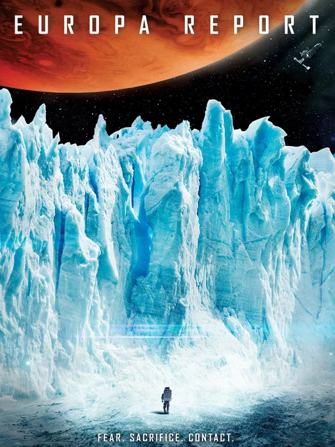

Siempre me gustaron las películas de exploración espacial, y esta no es la excepción. Informe Europa es una oda espacial, pero más que todo, una busqueda de vida, con tintes de terror y suspenso.
La ambientación es buena, en especial del satelite Europa, aunque existen pequeños errores de CGI. Las actuaciones tambien son buenas, pero lo que más destaca en la película es la historia y como es presentada. Esta en formato documental, y creo que fue un acierto, ya que en los primeros minutos vemos la muerte de un astronauta, no sabremos como ocurrió hasta avanzar tres cuartos del largometraje.
Y si, todos mueren en esta misión, pero cada una de las muertes esta muy bien justificada, tanto así que parecen necesarias para alcanzar su objetivo. Además este formato permite al director jugar un poco con los tiempos, y lo hace de manera genial con los segmentos de comentarios. Además, la imagen final es espectacular, no decepciona.